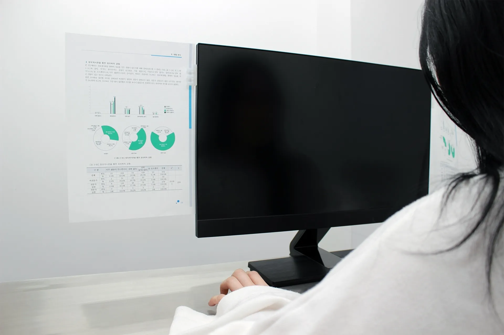

A4 Station
A paper clip designed to hold an A4 paper parallel to a monitor.
The six pillars on the side of it help to hold the paper without any wrinkles.
exhibited at 2020 Seoul Design Festival, Seoul, Korea
Patent number: 10-1765179-0000
Design patent number: 30-2015-0049955
